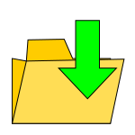
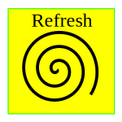
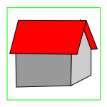
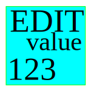
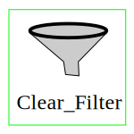
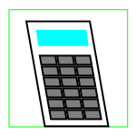
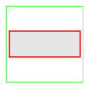
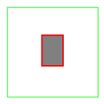

Comandi della vista Tabelle.
collezione precedente
Previous
Precedente.In riferimento alla Cronologia, torna alla Collezione precedente.
 collezione seguente
collezione seguente
Next
Successiva. In riferimento alla Cronologia, vai alla Collezione successiva.
 seleziona la collezione
seleziona la collezione
Select Collection.
Apri il menu di caricamento che consente di selezionare una Collezione di dati da una sorgente e di caricarla in memoria.Il menu Load Collection può anche essere usato per selezionare
un'altra Collezione già in memoria.La sequenza dei passaggi da una Collezione all'altra viene memorizzato nella Cronologia.
ricarica
Reload collection.
Ricarica la Collezione.La funzione considerata ricarica la Collezione selezionata annullando le modifiche.NOTA: il funzionamento di questa opzione dipende dalla tipologia delle sorgenti
dalle quali sono state caricare le collezioni, per cui in alcuni casi non può funzionare per motivi tecnici.
 salva le modifiche
salva le modifiche
Save Changes.
Salva le modifiche aggiornando il file dal quale la collezione era stata caricata.
 salva con nome
Save As.
Salva i dati della Collezione selezionata in un file attribuendo un nuovo nome.
 rinfresca
Refresh view.
Rinfrescando la tabella ricaricando i valori della Collezione di dati selezionata.
reset
Reset
Ripristina lo stato iniziale del programma evitando all'utente di dover ricaricare la pagina Web.
dischi
Disk
Seleziona la collezione dei dischi disponibili.
 home
Home
Seleziona la collezione di lavoro iniziale dell'utente (Home).
 modifica il valore
Change value.
Cambia il valore.Apre una scheda di dialogo in cui verrà mostrato il valore della cella selezionata integrato da eventuali informazioni supplementari offrendo, eventualmente, la
possibilità di editare il suddetto valore. Le informazioni fornite e le possibilità concernenti la modifica del valore considerato dipendono dal tipo di dato selezionato.
 nuovo record
nuovo record
New Record.
Apre una scheda di dialogo in cui verrà mostrato un record vuoto allo scopo di consentire l'inserimento di un nuovo record nella Collezione.
fotografa
Snap shot.
Scatta una "istantanea" della vista utente corrente che rende disponibli per il salvataggio in una nuova finestra.
 filtro javascript
filtro javascript
Filter JS.
Apre una scheda di dialogo in cui l'utente potrà inserire una condizione filtro scritta in JavaScript.Dopo la conferma il programma aggiornerà l'elenco dei record visualizzati mostrando
esclusivamente le tuple che soddisfano la condizione impostata.
 wizard
wizard
Wizard.
Apre una scheda di dialogo in cui l'utente potrà inserire una condizione filtro facendosi aiutare dal Wizard.Dopo la conferma il programma aggiornerà l'elenco dei record visualizzati
mostrando esclusivamente le tuple che soddisfano la condizione impostata.
filtro qbe
Filter Query by Example.
Apre una scheda di dialogo in cui viene riprodotta l'organizzazione dei campi dei record della collezione considerata.L'utente può riempire uno o più campi inserendo delle stringhe di
caratteri corrispondenti al prefissi da cercare.Dopo la conferma il programma aggiornerà l'elenco dei record visualizzati mostrando esclusivamente le tuple che soddisfano la condizione
impostata.
filtro stringa
Filter String.
Apre una scheda di dialogo in cui l'utente potrà inserire una stringa di caratteri che si desidera cercare.Dopo la conferma il programma aggiornerà l'elenco dei record visualizzati
mostrando esclusivamente le tuple che soddisfano la condizione impostata.
commuta la selezione
Toggle Filter.
Commuta la selezione tornando a mostrare l'intera collezione, cioè tutti i record che la compongono.
inverti la selezione
Invert Filter.
Commuta il filtro mostrando i record che non soddisfano le condizioni impostate.
 annulla la selezione
Clear selection.
Annulla la selezione.Cancella la condizione di filtro precedentemente impostata.
vai alla riga
Go to line
Sposta il cursore selezionando il record specificato dall'utente (fra quelli soddisfacenti le condizioni di filtro).
layout
Layout
Apre una finestra di dialogo che consente di modificare le caratteristiche del tracciato record del campo selezionato.
field layout
Field Layout
Apre una finestra di dialogo che consente di modificare le caratteristiche del tracciato record del campo selezionato.
 configura vista utente
configura vista utente
Config. UsrView
Apri il pannello che consente di editare i parametri associati alla Collezione selezionata.
 calcolatrice
Calculator
Mostra la calcolatrice.
 aiuto
aiuto
Help.
Apre la schermata di Help contestuale mostrando le informazioni concernenti le funzioni disponibili nel contesto considerato.
informazioni
About.
Mostra le informazioni generali concernenti l'autore e le condizioni di licenza.
 comando LN
NL command
Inserisci un comando in linguaggio naturale.
 esegui
Submit command
Esegui Comando
 configura
configura